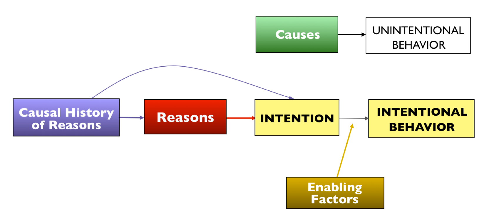

In response to intense demands of social life, human beings have evolved a number of capacities that allow them to make sense of other agents—to interpret, explain, and predict their behavior, share their experiences, and coordinate interactions with them. These capacities include simple processes such as gaze following or mimicry; complex processes such as imaginative simulation and mental state inference; and abstract concepts such as intentionality and belief. These capacities are typically subsumed under the label social cognition (Malle, 2008).
Explanations of behavior
People seek two very different types of explanation depending on what kind of behavior they encounter. Purposeful, intentional behaviors (such as crossing the street) are explained primarily with reasons – what the agent likely had in mind when forming the intention to act (e.g., wanting to buy milk, or thinking that the teenagers may be aggressive). Unintentional behaviors (e.g., stubbing one’s toe) are instead explained with causes (e.g., being distracted, a floor cluttered with boxes). Much of the early work on attribution theory focused on conditions under which people select “internal” causes (within the person) or “external” causes (in the situation) (Kelley 1967). Extensive debate and accumulated evidence, however, showed that this kind of selection is only a minor part of behavior explanation, limited to cause explanations of unintentional behavior (Buss 1978; Malle 2004). Far more prominent are the tasks of determining whether a behavior is intentional or not and, if it is, what the agent’s reasons were for performing it (Malle 1999). Occasionally people side-step the actor's particular reasons and refer to the causal background of those reasons, in culture, personality, or context---providing Causal History of Reason (CHR) explanations. Subsequent choice points exist at which explainers who prepare to provide the actor's reasons select desire reasons or beliefs reasons and either mark those reasons with mental state verbs or not (e.g., "she thought," "he wanted"). All these decisions are sensitive to whether people explain their own or others' behaviors (Malle, Knobe & Nelson, 2017), whether they explain individual or group behaviors (O'Laughlin & Malle, 2002), and whether their explanations are intended to fulfill particular goals (e.g., to appear rational; Malle et al., 2000).

Against the background of this theory of behavior explanation (Malle, 2004, 2011), we have also examined the frequency with which people offer traits (stable dispositions) as explanations of behavior. Counter to the common belief that people use a lot of traits in their behavior explanations, we have shown that they use them in only 5-10% of their explanations (Malle et al., 2007). And that low rate holds even when people explain highly surprising and unusual behaviors (Korman & Malle, 2016).
Currently we explore what kinds of explanations people choose when they engage in (self-serving) impression management, and whether the classic claim that explanations are heavily influenced by visual perspective (Storms, 1973) really holds up to scrutiny. Finally, we have recently provided evidence that people use the folk-conceptual framework of explanation even when they account for robots' behaviors (de Graaf & Malle, 2019; see also here).
Mental state inference
In the past we explored the problem of mental state inferences more generally (Malle, 2005; Hodges & Malle, 2005; Malle, 2008). More recently (Malle & Holbrook, 2012) we developed a methodology to study the relationships among the many different kinds of mental states inferences (e.g., of intentionality, goals, beliefs). Currently we are conducting studies on the way in which script or norm violations trigger mental state inferences. In addition, we have just completed a series of studies that explore when people spontaneously take another person's visual perspective.
Korman, J., & Malle, B. F. (2016). Grasping for traits or reasons? How people grapple with puzzling social behaviors. Personality and Social Psychology Bulletin, 42, 1451-1465.
Malle, B. F. (1999). How people explain behavior: A new theoretical framework. Personality and Social Psychology Review, 3, 23-48. 
Malle, B. F. (2004). How the mind explains behavior: Folk explanations, meaning, and social interaction. Cambridge, MA: MIT Press. 
Malle, B. F. (2005). Three puzzles of mindreading. In B. F. Malle & S. D. Hodges (Eds.), Other minds: How humans bridge the divide between self and other (pp. 18-35). New York: Guilford Press. 
Malle, B. F. (2008). The fundamental tools, and possibly universals, of social cognition. In R. Sorrentino and S. Yamaguchi (Eds.), Handbook of motivation and cognition across cultures (pp. 267-296). New York: Elsevier/Academic Press. 
Malle, B. F. (2011). Time to give up the dogmas of attribution: An alternative theory of behavior explanation. In J. M. Olson and M. P. Zanna, Advances of Experimental Social Psychology (Vol. 44, pp. 297-352). Burlington: Academic Press.
Malle, B. F., & Holbrook, J. (2012). Is there a hierarchy of social inferences? The likelihood and speed of inferring intentionality, mind, and personality. Journal of Personality and Social Psychology, 102, 661–684.
Malle, B. F., Knobe, J., & Nelson, S. (2007). Actor-observer asymmetries in behavior explanations: New answers to an old question. Journal of Personality and Social Psychology, 93, 491–514.
Malle, B. F., Knobe, J., O’Laughlin, M., Pearce, G. E., & Nelson, S. E. (2000). Conceptual structure and social functions of behavior explanations: Beyond person–situation attributions. Journal of Personality and Social Psychology, 79, 309-326.
O’Laughlin, M. J., &. Malle, B. F. (2002). How people explain actions performed by groups and individuals. Journal of Personality and Social Psychology, 82, 33-48.
Storms, M. D. (1973). Videotape and the attribution process: reversing actors’ and observers' points of view. Journal of Personality and Social Psychology, 27, 165–175.